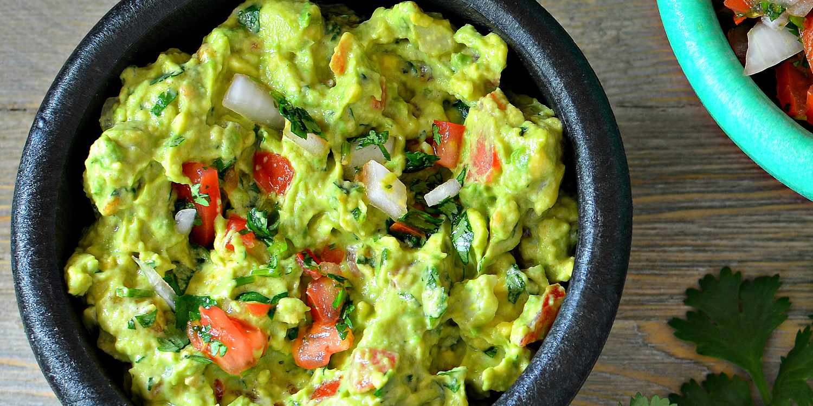

Guacamole

Description
This recipe is all about guacamole and how to make it in the best way possible.
We will go over the ingredients and steps of preparation.
Ingredients:
- Large avocados - 2
- Small tomato - 1
- Small onion - 1
- Small bunch of cilantro - 1
- Half a lime - 1
- salt and pepper - a pinch
Steps:
For best results make sure your avocados are soft
- Finley dice tomato, onion and cilantro
- Mash avocados
- Add dices vegetables to avocado
- Add lime, salt and pepper to avocado
- Mix well